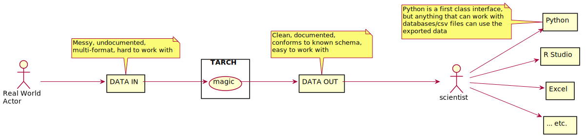
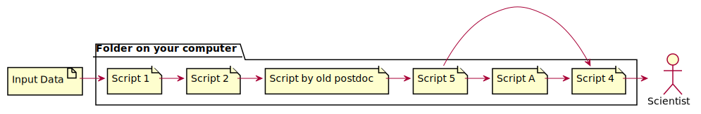
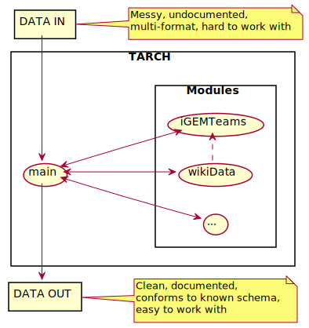
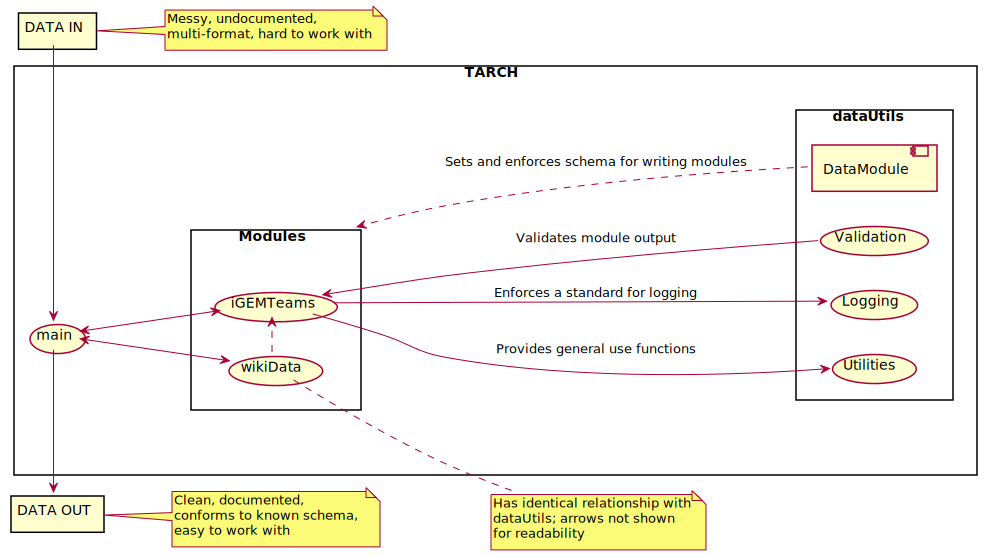
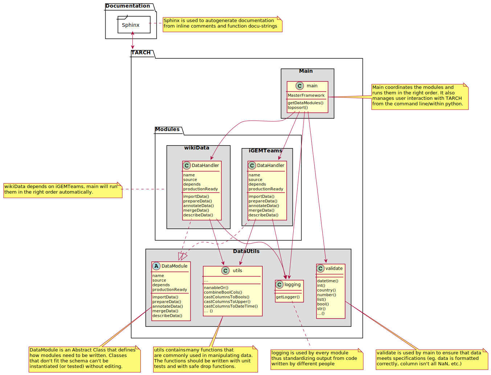

Welcome to TARCH’s documentation!¶
TARCH¶
What is TARCH?¶
TARCH is a framework written in Python 3.8 for turning lots of messy real-world data into clean, documented and usable data for analysis. Special attention is paid to repeatability, self documentation and ease of use.
Why should I use TARCH?¶
When working on a long project with lot’s of people coming and going, it is very easy to end up with a mess of scripts in a folder that need to be run in an arcane order that no one truely understands. On top of organizational concerns, documentation and understanding of raw data/processed data can be a monumetal task on it’s own. And we haven’t even mentioned the trials and tribulations of standardizing workflows! Worry not, TARCH is here to help.
The goal of TARCH is to keep the simplicity and immediate ease-of-use of the “folder of scripts” method while providing structure and standardization to make scientists life easier when it’s time to replicate, check or verify their work. Additionally, TARCH is designed for an ever changing lab - startup is quick and easy so summer interns/research assistants can get working without a steep learning curve.
TARCH provides three sets of built in features - Logging, Validation and Utilities. Logging is straight forward - it provides a common interface to modules so that (a) you save time by not reimplementing it and (b) files written by different people output logs that are cohesive. Utilities provides >60 functions for common data manipulation tasks (especially those related to cleaning poorly formatted data). Validation [WIP] reads a schema file and is used by main to validate the output of modules to ensure data is formatted correctly and consistently.
Structure of TARCH¶
The individual components of TARCH are described below. Sphinx is used to autogenerate documentation from inline docustrings.
DataUtils¶
-
class
dataUtils.CustomNA(reason)¶ Used for variables that we want to treat as NA in analyses but want to flag for some reason
- Parameters
reason (str) – message to raise when printing/displaying.
-
class
dataUtils.DataModule¶ Abstract class that sets the layout for how all data modules must be written.
-
class
dataUtils.ImpliedBool(value, string)¶ Used for variables that we want to treat as bool in analyses but want to flag for some reason
- Parameters
value (bool) – bool value to “act” as
string (str) – message to raise when printing/displaying. Formatted with value so “eg: {}” becomes “eg: value”
-
dataUtils.applyMapRecursively(series, function)¶ Apply function to map a iterable to a new list interatively, helper function for castComplicatedColumn (below)
- Parameters
series (list) – input iterable to iterate over and translate to new list
function – function to apply
Examples
>>> testList = [0,1,2,3] >>> >>> applyMapRecursively(testList, str) ["0", "1", "2", "3"] >>> >>> def f(x): >>> isOdd = lambda x: bool(x % 2) >>> if isOdd(x): >>> return lambda x: x*3 >>> else: >>> return "Even!" >>> >>> applyMapRecursively(testList, f) ["Even!", 3, "Even!", 9]
-
dataUtils.beautifyBool(foo, warning=True)¶ - Parameters
warning (bool) – If True, returns warning symbol instead of red X if foo is False
- Returns
emoji based on bool, green check mark if True
Requires the emoji to return emojis.
-
dataUtils.castColumn(df, column, function, logger, name=None, inPlace=True, replaceColumn=False)¶ - Parameters
df (pandas.DataFrame) – pandas dataframe
column (str) – column name in df to cast
function (function) – casting function (anything that can be used via pandas .applymap)
logger – logging object
name (str) – new name for casted column
inPlace (bool) – default True, modify df in place - if false return new DataFrame
Note
depending on value of inPlace, return type is different
if inPlace is True
- Returns
(str) name of new column
if inPlace is False
- Returns pandas.DataFrame, str
New modified column where each element of df column is mapped to function(element), name of new column
Examples
>>> df = pd.DataFrame({"AAA": [4,5,6,7], >>> "BBB": [10,20,30,40], >>> "CCC": [100,50,-30,-50]}) AAA BBB CCC 0 4 10 100 1 5 20 50 2 6 30 -30 3 7 40 -50 >>> def f(x): >>> return x*2 >>> >>> castColumn(df.copy(), "AAA", f, logger) "f(AAA)" >>> castColumn(df.copy(), "AAA", f, logger, name="Double AAA") "Double AAA" >>> castColumn(df, "AAA", f, logger, inPlace=False) ( AAA BBB CCC f(AAA) 0 4 10 100 8 1 5 20 50 10 2 6 30 -30 12 3 7 40 -50 14, 'f(AAA)')
-
dataUtils.castColumnsToBool(df, suspectBoolCols, logger)¶ Safely casts columns to bool, logs actions
- Parameters
df (pandas.DataFrame) – input dataframe
suspectBoolCols (list(str)) – columns suspected to contain bool-like values
logger – logging logger object
-
dataUtils.castColumnsToDateTime(df, suspectDateCols, logger)¶ Safely casts columns to DateTime, logs actions
- Parameters
df (pandas.DataFrame) – input dataframe
suspectDateCols (list(str)) – columns suspected to contain DateTime-like values
logger – logging logger object
-
dataUtils.castColumnsToTypeConstructor(caster, castString='', usePandasCasting=False)¶ Function to generate safe caster objects
Used to generate castColumnsToCategory and castColumnsToInt functions.
- Parameters
caster (function) – function for casting column entries (eg, str. upper or int)
castString (str) –
usePandasCasting (bool) –
- Returns
column caster
- Return type
function
-
dataUtils.castColumnsToUpper(df, cols, logger, handleNan=True)¶ Safely casts columns to DateTime, logs actions
- Parameters
df (pandas.DataFrame) – input dataframe
cols (list(str)) – columns with str entries (or float(“Nan”)) to cast
logger – logging logger object
handleNan (bool) – if True, use upperHandleNan to cast
-
dataUtils.castComplicatedColumn(df, originalCol, newCol, castDict, exclude=None, inPlace=True, tagOldColumn=False)¶ df (DataFrame): dataframe to operate on originalCol (string): column to cast from df newCol (string): new name for cast column castDict (dict): mapping for casting exclude (list): list of excludeBy namedtuples to exclude via column and values of said column and replace with storeValue inPlace: modify in place or return new df
- returns:
- inPlace: True
DataFrame: new modified df with cast column newCol
- example:
- df = AAA BBB CCC
0 True 2 string1 1 True 3 string2 2 False 4 string3
- castComplicatedColumn(df, “AAA”, “cast(AAA)”, {True: “Yes”, False: “No”})
- df = AAA BBB CCC cast(AAA)
0 True 2 string1 Yes 1 True 3 string2 Yes 2 False 4 string3 No
- castComplicatedColumn(df, “AAA”, “cast(BBB)”, {2: “Valid”, 3:”Valid”, 4:”Invalid”}, inPlace=False) => dff
- dff = AAA BBB cast(BBB) CCC
0 True 2 Valid string1 1 True 3 Valid string2 2 False 4 Invalid string3
- castComplicatedColumn(df, “CCC”, “cast(CCC)”, {“string1”: “A”, “string2”: “B”, “string3”: “C”},
exclude=[excludeBy(colName=”AAA”, values=[False], storeValue=NC)])
- df = AAA BBB CCC cast(CCC)
0 True 2 string1 A 1 True 3 string2 B 2 False 4 string3 NC
-
dataUtils.combineBoolCols(df, cols, function=<function nanableOr>)¶ df (DataFrame): input dataframe cols (list): list of column names of cols in df to merge function (function, optional): function to use to merge columns, must take two arguments
returns: (list) new, merged column
examples:
- df = AAA BBB CCC
0 False False True 1 False True False 2 True False False 3 False True True
combineBoolCols(df, [“AAA”, “BBB”]) => [False, True, True, True] combineBoolCols(df, [“CCC”, “BBB”]) => [True, True, False, True]
combineBoolCols(df, [“AAA”, “BBB”, “CCC”]) => [True, True, True, True]
combineBoolCols(df, [“AAA”, “BBB”], function=lambda x,y: True) => [True, True, True, True] combineBoolCols(df, [“AAA”, “BBB”], function=lambda x,y: “Pineapple”) => [“Pineapple”, “Pineapple”, “Pineapple”, “Pineapple”]
-
class
dataUtils.excludeBy(colName, values, storeValue)¶ -
colName¶ Alias for field number 0
-
storeValue¶ Alias for field number 2
-
values¶ Alias for field number 1
-
-
dataUtils.expDict(dic)¶ Flattens dictionary objects
- Parameters
dic (dict) – input dictonary (eg. {[1,”Yes”]: True, [0, “No”]: False})
- Returns
expanded dict, see examples below for clarity
- Return type
dict
Examples:
>>> expDict({(1, "Yes"): True}) {1: True, "Yes": True} >>> expDict({1: "a"}) {1: a} >>> expDict({1: ("a", "b")}) {1: ("a", "b")} >>> expDict({(1,2):True, 1:False}) RuntimeError("Overlapping Keys")
-
dataUtils.fillBlanksWithNa(df, logger)¶ replaces ‘’ with np.nan
- Parameters
df (pandas.DataFrame) –
logger (logger object) –
-
dataUtils.getBoolCaster(convBlankTo)¶ Returns a function that can cast bools and blank strings to bools
- Parameters
convBlankTo – what to convert blanks to in returned caster (ideally bool)
- Returns
takes in string and converts s to boolFromString(s) unless blank, then returns convBlankTo
- Return type
function
Examples:
>>> a = getBoolCaster(True) >>> a("True") True >>> a("") True
>>> b = getBoolCaster(False) >>> b("True") True >>> b("") False
>>> c = getBoolCaster("anything can go here") >>> c("True") True >>> c("") "anything can go here"
-
dataUtils.getDescriptions(module)¶ pulls column descriptions from xlsx/csv files and returns a dict
- Returns
column -> dict{“description”: text description, “follow-up”: needs follow-up, “questions”: pending questions, “assumptions”: assumptions}
- Return type
dict
-
dataUtils.getLogger(module, forceString=False)¶ Returns logger based on module name
- Parameters
module – ostensibly any object, written with utils.DataModule in mind
forceString (bool) – use if module.name() isn’t implemented / doesn’t return a string
- Returns
-
dataUtils.igemDatabaseJSONToDataFrame(filename, messy=True)¶ Takes in exported JSON and returns pandas.DataFrame
- Parameters
filename (str) – input .json file
messy (bool) – some exports are “messy” and have poor delimiter formatting - setting this to True enables import of these files as well
- Returns
dataframe containing JSON data
- Return type
pandas.DataFrame
Examples
>>> a.json = 'AAA;BBB;CCC;\n1;2;"string";' # file contents >>> igemDatabaseJSONToDataFrame("a.json") AAA BBB CCC 0 1 2 string
-
dataUtils.initLogging()¶ Initializes logging, adds an explicit logging level for ‘DATADROP’
- Returns
logger object
-
dataUtils.messyBoolCaster(string)¶ Takes string and casts to bool :param string: input string to cast :type string: str
- Returns
if string “1”, “True” or “true”
- Return type
bool
Examples
>>> messyBoolCaster("True") True >>> messyBoolCaster("1") True >>> messyBoolCaster("true") True >>> messyBoolCaster("False") False >>> messyBoolCaster("blah blah blah") False
-
dataUtils.nanableNot(x)¶ Not function that can take Nan values
- Parameters
x (bool, NaN) – input
- Returns
np.nan if x is (some form of) nan else not x
Examples
>>> nanableNot(True) False >>> nanableNot(False) True >>> nanableNot(np.nan) np.nan >>> nanableNot(float("Nan")) np.nan
-
dataUtils.nanableOr(x, y)¶ Or function that can take Nan values
- Parameters
x (bool, nan) – input one
y (bool, nan) – input two
- Returns
bool if both nan, x if y is nan, y if x is nan else x or y (see table below)
Value of X
True
False
Nan
Value of Y
True
True
False
Nan
False
True
False
False
Nan
True
False
Nan
-
dataUtils.queryDatabase(query, database, host='127.0.0.1')¶ Queries database and saves data to a local pickle OR if mode is local, read query data from pickle
- Parameters
query (str) – SQL Query
database (str) – database to query
host (str) – database host, default 127.0.0.1
- Returns
-
dataUtils.removeQuotesIfThere(quotedString, useSingleQuote=False)¶ Removes quotes from string. Fails silently, only removes quotes if there - if not, just returns quotedString
- Parameters
quotedString (str) – input string to remove quotes from
useSingleQuote (bool) – if True remove single (‘) quote instead of default False (“)
- Return string
quotedString with at max two chars removed from the beginning and end.
Examples:
>>> removeQuotesIfThere('"test"') 'test' >>> removeQuotesIfThere('"test') '"test' >>> removeQuotesIfThere("'test'") "'test'" >>> removeQuotesIfThere("'test'", useSingleQuote=True) "test"
-
dataUtils.safeDropColumn(df, col, logger, reason, reasontext=' ')¶ Drops rows with specific values in col (with logging) unless –no-drop flag has been explicitly set to ignore.
- Parameters
df (pandas.DataFrame) – input dataframe
col (str) – column to drop
logger – logger object
reason (str) – reason for dropping (many standard options defined in dataUtils)
reasontext (str) – extended reason for dropping, a place for notes to future you
-
dataUtils.safeDropDuplicates(df, cols, logger, reason, reasontext=' ', *args, **kwargs)¶ Drops duplicate columns with logging unless –no-drop flag has been explicitly set to ignore.
- Parameters
df (pandas.DataFrame) – input dataframe
cols (list (of strings)) – columns to drop
logger – logger object
reason (str) – reason for dropping (many standard options defined in dataUtils)
reasontext (str) – extended reason for dropping, a place for notes to future you
args – args to pass to pd.DataFrame.drop_duplicates
kwargs – kwargs to pass to pd.DataFrame.drop_duplicates
- Returns
None
-
dataUtils.safeDropEmptyCols(df, logger)¶ safely drop empty cols (log to info level columns that are dropped)
An empty column is one that only contains one of the following: “”, ” ” or None
- Parameters
df (pandas.DataFrame) –
logger (logger object) –
-
dataUtils.safeDropNARows(df, logger)¶ safely drop all NA rows
- Parameters
df (pandas.DataFrame) –
logger (logger object) –
-
dataUtils.safeDropRowByColValues(df, col, values, logger, reason, reasontext=' ')¶ Drops rows with specific values in col (with logging) unless –no-drop flag has been explicitly set to ignore.
- Parameters
df (pandas.DataFrame) – input dataframe
col (str) – column to search
values (list) – values to search for
logger – logger object
reason (str) – reason for dropping (many standard options defined in dataUtils)
reasontext (str) – extended reason for dropping, a place for notes to future you
-
dataUtils.settify(df, cols)¶ Returns set of possible values ordered by order of cols
- Parameters
df (pandas.DataFrame) – input dataframe
cols (list, str) – col(s) to settify
- Returns
of possible values ordered by order of cols (see examples)
- Return type
set
Examples
>>> df = pd.DataFrame({"AAA": ["Cat","Cat","Dog","Dog"], >>> "BBB": ["Black","Black","White","Grey"], >>> "CCC": [0,5,10,10]}) >>> df AAA BBB CCC 0 Cat Black 0 1 Cat Black 5 2 Dog White 10 3 Dog Grey 10 >>> settify(df, ["AAA"]) {"Cat", "Dog"} >>> settify(df, ["BBB"]) {"Black", "White", "Grey"} >>> settify(df, ["AAA", "BBB"]) {("Cat", "Black"), ("Dog", "White"), ("Dog", "Grey")} >>> settify(df, ["AAA", "CCC"]) {("Cat", 0), ("Cat", 5), ("Dog", 10)} >>> settify(df, ["AAA", "CCC", "BBB"]) {("Cat", 0, "Black"), ("Cat", 5, "Black"), ("Dog", 10, "White"), ("Dog", 10, "Grey")}
-
dataUtils.splitByString(string, splitString, excludeString, skipLast=False)¶ Splits string by splitString unless surronded by exludeString
- Parameters
string (str) – input string to operate on
splitString (str) – string to split by
excludeString (str) – string to escape splitting
skipLast (bool) – Skip last string
- Returns list
string split into substring list elements
Examples
>>> splitByString("a;b", ";", "%") ["a", "b"] >>> splitByString("%a;b%", ";", "%") ["%a;b%"] >>> splitByString("%a;b", ";", "%") ["%a;b"] >>> splitByString("a;b%", ";", "%") ["a", "b%"]
-
dataUtils.stripHandleNan(input)¶ Just like str.strip but returns np.nan if input is in [“nan”, “NaN”, “Nan”]
- Parameters
input (str, float) – input string or Nan (np.nan or NaN handled)
Examples
>>> upperHandleNan("hi") "HI" >>> upperHandleNan(np.nan) np.nan >>> upperHandleNan(float("Nan")) np.nan
-
dataUtils.tagDf(df, tag, logger, exempt=[], inplace=False)¶ Returns df with ‘tagged’ column names
- Parameters
df (pandas.DataFrame) – dataframe to tag
tag (str) – tag to append to all column names
exempt (list) – columns to skip when appending tags
inplace (bool) – default True, modify df in place - if false return new DataFrame
if inPlace is False
- Returns
df with new column names
Examples
>>> df = pd.DataFrame({"AAA": [4,5,6,7], >>> "BBB": [10,20,30,40], >>> "CCC": [100,50,-30,-50]}) >>> df AAA BBB CCC 0 4 10 100 1 5 20 50 2 6 30 -30 3 7 40 -50 >>> tagDf(df, "_cat") AAA_cat BBB_cat CCC_cat 0 4 10 100 1 5 20 50 2 6 30 -30 3 7 40 -50 >>> tagDf(df, "_new", inplace=True) # doesn't return anything >>> df AAA_new BBB_new CCC_new 0 4 10 100 1 5 20 50 2 6 30 -30 3 7 40 -50
-
dataUtils.upperHandleNan(input)¶ Just like str.upper but returns np.nan if input is in [“nan”, “NaN”, “Nan”]
- Parameters
input (str, float) – input string or Nan (np.nan or NaN handled)
Examples
>>> upperHandleNan("hi") "HI" >>> upperHandleNan(np.nan) np.nan >>> upperHandleNan(float("Nan")) np.nan
-
dataUtils.verifyVersioning()¶ Verifies versions of important packages and python installation, raises exception and quits if versions aren’t correct
- Returns